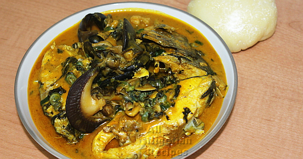

NativeSoup Recipe

Finger-licking delicacy, best served with pounded yam or fufu
Native soup primarily originated from Rivers State, Nigeria. Made mainly with fresh seafood
ingredients, it is a delicacy that adds flavour to every occasion.
Ingredients
- 9 Snail
- 3 medium Fresh Fish
- 1/2 cup Periwinkle
- 6 medium Cocoyam
- 1 cup Sea Snails
- 1 cup Shrimps
- 1 tablespoon Uziza seed
- 2 cups Clams
- 1-2 yellow Habanero Pepper
- 2 big Stock cubes
- Bitter leaves
- 5 Uziza leaves
- 1/4 cup Palm oil
Recipe instructions
- Place the snails in a pot, add the seasoning cubes, pour water to cover and cook for 20 minutes
- Add ground uziza, the clams, sea snails, shrimps and fish, top up the water if necessary and cook
till the fish is done.
- Take out the fish from the pot and set aside.
- Add the cocoyam in small lumps. Add the bitter leaves, yellow pepper and palm oil. Cover and cook
till the lumps of cocoyam dissolve. Stir the contents of the pot very often.
- Add salt to taste.
- Add the fish back into the pot. Stir, cover and let it simmer.